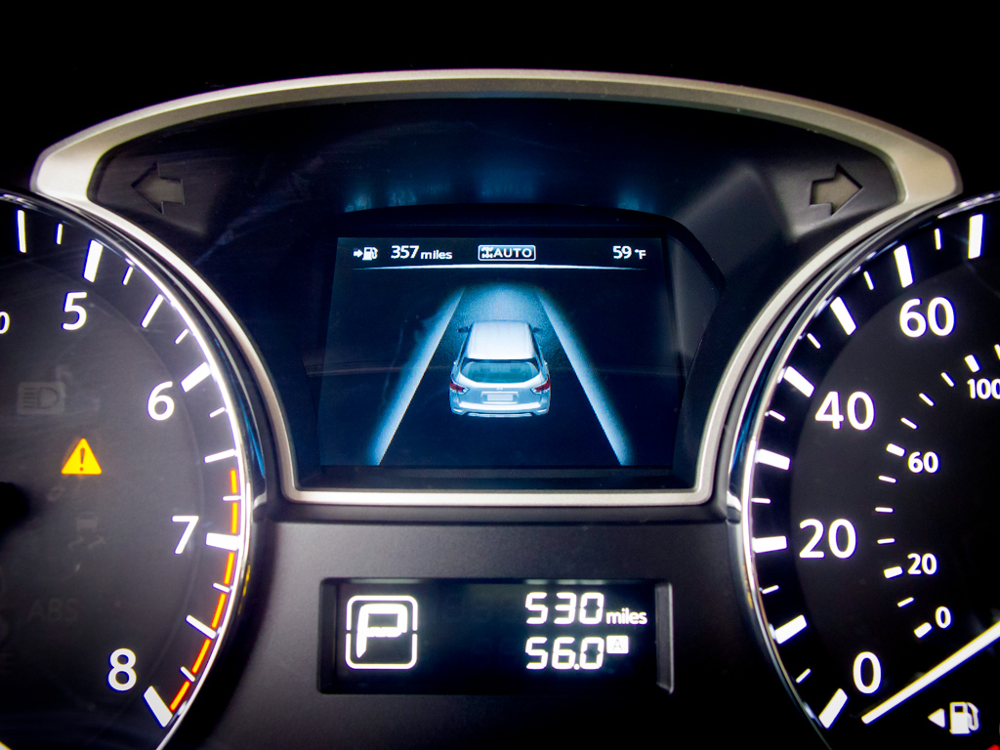

LANE DEPARTURE WARNING

Lane keeping assist is a feature that, in addition to the lane departure warning system, automatically takes steps to ensure the vehicle stays
in its lane. Some vehicles combine adaptive cruise control with lane keeping systems to provide additional safety.
While the combination of these features creates a semi-autonomous vehicle, most require the driver to remain in control of the vehicle while it
is in use. This is because of the limitations associated with the lane-keeping feature.[26]
The lane keeping assist system is being achieved in modern driverless vehicle systems using image processing techniques called hough transform and
canny edge detection techniques. These advanced image processing techniques derive lane data from forward facing cameras attached to the front of
the vehicle. Real-time image processing using powerful computers like Nvidia's Drive PX1 are being used by many Vehicle OEMs to achieve fully autonomous
vehicles in which Lane detection algorithm plays a key part. Advanced lane detection algorithms are also being developed using deep learning and neural
network techniques.[27] Nvidia has achieved high accuracy in developing self-driving features including lane keeping using the neural network based training
mechanism in which they use a front facing camera in a car and run it through a route and then uses the steering input and camera images of the road fed into
the neural network and make it 'learn'. The neural network then will be able to change the steering angle based on the lane change on the road and keep the
car in the middle of the lane.[28]
Tesla uses the most advanced Lane assist system combined with their Adaptive cruise control system marketed together as 'Autopilot'.[29] It includes features
like lane-keeping assist and also automatic lane changing without driver input. A similar technology to lane assist is used to do Autopark feature as well.
A lane keeping assist mechanism can either reactively turn a vehicle back into the lane if it starts to leave or proactively keep the vehicle in the center
of the lane. Vehicle companies often use the term "Lane Keep(ing) Assist" to refer to both reactive Lane Keep Assist (LKA) and proactive Lane Centering Assist
(LCA) but the terms are beginning to be differentiated.